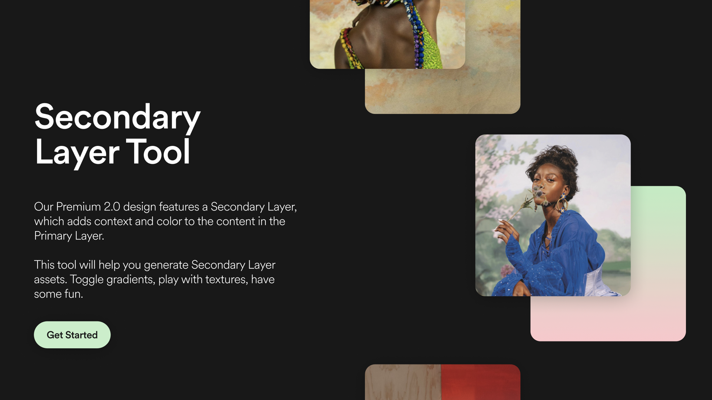

I'm a Product Manager and Creative Ops lead, working in design & tech studios since 2019.
I help turn ideas into thoughtful products
and bring them to life.

Based in London. I'm a Product Manager and Creative Ops lead with six years in design and tech studios. I've worked at Bakken & Bæck in London and Stink Studios in Buenos Aires, where I helped set up the BA office and ran production across Buenos Aires, London, LA, and Shanghai for clients like Google, Spotify, Nike, and Peloton.
I like to build the operational layer that lets creative teams do their best work. Systems, trackers, and workflows that turn briefs into projects that actually ship on time.
I care about process, communication, and delivery. I like being hands-on, and I'm at my best when the work involves multiple teams.